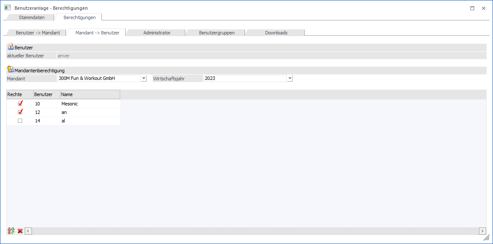
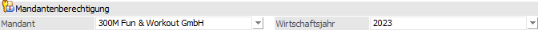
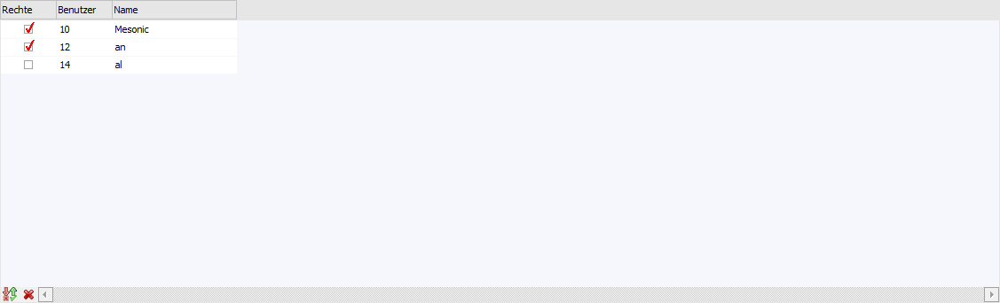

Benutzeranlage - Register "Berechtigungen - Mandant -> Benutzer"
In diesem Unterregister kann eingestellt werden, welcher Mandant von welchen Benutzer bearbeitet werden darf. Im Gegensatz zum Register "Benutzer -> Mandant" wird hier aber zuerst der Mandant ausgewählt, danach wird dann definiert, welcher Benutzer darauf zugreifen darf.
Hinweis
Dieses Register kann nur dann bearbeitet werden, wenn der Benutzer kein Administrator oder kein Datenadministrator ist (diese beiden Benutzertypen haben immer Zugriff auf alle Mandanten).

Benutzer

Ø aktueller Benutzer
An dieser Stelle wird der aktuell gewählt Benutzer angezeigt. Für diesen werden die folgenden Einstellungen getätigt.
Mandantenberechtigung

Ø Mandant
Aus der Auswahlliste kann der Mandant gewählt werden, für den eine Berechtigung vergeben werden soll.
Ø Wirtschaftsjahr
Aus der Auswahllistbox kann das Wirtschaftsjahr ausgewählt werden, für welches die Berechtigung vergeben werden soll. Wird die Option "<alle Wirtschaftsjahre>" gewählt, dann gilt die getroffene Einstellung für den gesamten Mandanten.
Tabelle "Benutzer"

In der Tabelle werden alle angelegten Benutzer (mit Ausnahme des Benutzers "meso", der sowieso auf alle Mandanten zugreifen kann) angezeigt.
Ø Rechte
Durch Aktivieren der Checkbox "Rechte" in der gewünschten Benutzer-Zeile erhält der Benutzer die Berechtigung, auf den Mandanten / Wirtschaftsjahr zuzugreifen.
Ø Benutzer / Name
In diesen Spalten werden die Benutzernummer und der Benutzername angezeigt.
Tabellenbuttons

Ø Auswahl umkehren
Durch Anklicken des Umkehren-Buttons kann die vorgenommene Einstellung in das Gegenteil gewandelt werden.
Beispiel
Es werden 20 Benutzer angezeigt, nur ein Benutzer darf einen Mandanten nicht bearbeitet. Es wird nur dieser eine Benutzer aktiviert, durch Drücken des Umkehr-Buttons wird die Selektion umgewandelt und alle Benutzer, die zuerst deselektiert waren, sind jetzt selektiert. Es müssen nicht 19 Benutzer aktiviert werden.
Ø keine Auswahl
Durch Anklicken des Buttons "keine Auswahl" werden alle getroffenen Selektionen gelöscht.
Ø Ausgabe Excel
Durch Anwahl des Buttons "Ausgabe Excel" wird der Inhalt der Tabelle an Microsoft Excel übergeben.
Ø Tabelleneinstellungen speichern
Die Spalten einer Tabelle können grundsätzlich an beliebige Positionen verschoben, bzw. in der Breite entsprechend angepasst werden. Durch Anwahl des Buttons "Tabelleneinstellungen speichern" werden die Einstellungen benutzerspezifisch gespeichert und bei dem nächsten Aufruf des Programmpunktes wieder vorgeschlagen.
Ø Gesamteinstellungen speichern
Im Gegensatz zu "Tabelleneinstellungen speichern" können mit "Gesamteinstellungen speichern" mehrere Tabellenaufbauten gespeichert und nach Wunsch geladen werden. Zusätzlich werden Sonderfunktionen der Tabelle (z.B. "Spalte gruppieren") ebenfalls bei der Speicherung bedacht.